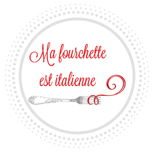
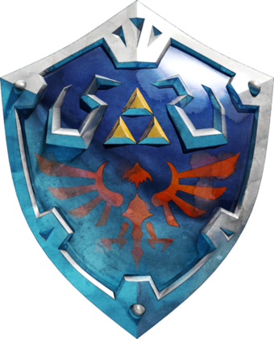
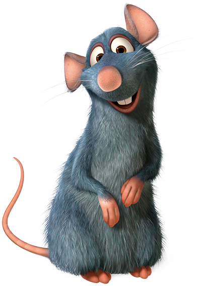

Ultia
Twitch.tv/ultia LestreamUltia, streameuse depuis septembre 2017 sur sa propre chaîne twitch mais également ponctuellement sur la WebTV "LeStream" pour l'émission LeRécap Weekend. Sur sa chaîne retrouvez des formats tel que la Zeld'Académie disponible également sur sa chaîne Youtube. Fan de Jeux vidéo et de licences phares tel que Zelda, Mario, Animal Crossing et tant d'autres. Ultia affectionne aussi la cuisine ! Elle partage ses recettes à sa communauté "les ratus", une communauté remplit de bonheur et de bonnes astuces en tout genre !
Retrouvez ici les talents en cuisine d'Ultia et des ratus : entre gâteaux sucrés et soupes aux légumes on y trouve tous notre compte ! Gourmandise, simplicité et économies !
La Zeld'Académie ! un format d'analyse, d'explication et de découvertes sur cette licence mythique du jeux vidéo qu'est The Legend of Zelda. Présenté et écrit par Ultia venez vous plonger dans cette aventure avec nous !
Live, Vidéos, des clips hilarants, suivez Ultia et ses aventures dans les mondes merveilleux des Sims, Animal Crossing et bien d'autres encore à découvrir en sa compagnie.

Les ratus, communauté fidèle d'Ultia. remplie de bonne humeur, de bienveillance et de talents rejoignez-nous sur le serveur discord dédié !
